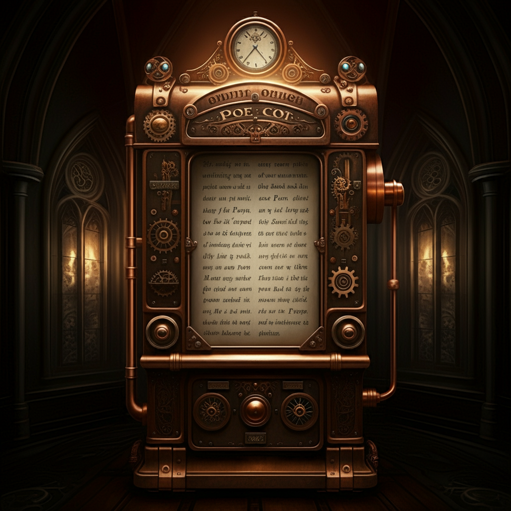
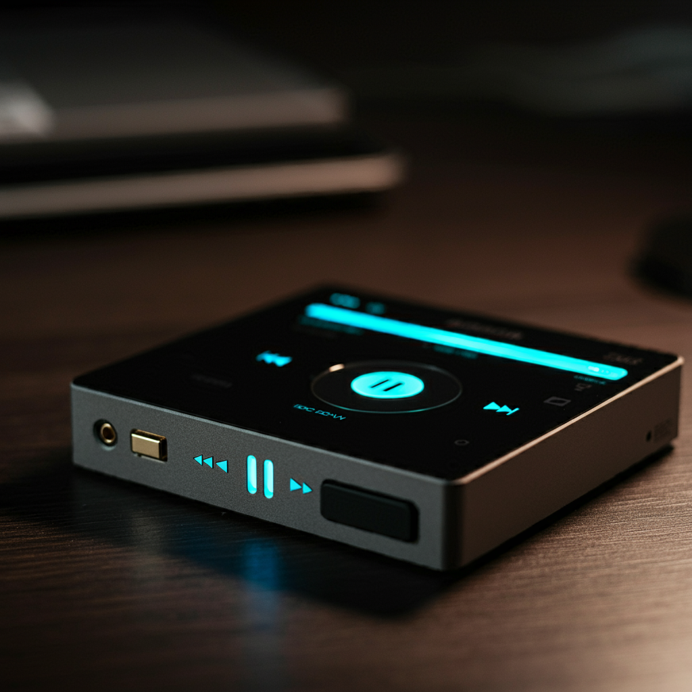

Bedrooms
There are over 5 bedrooms and they were drawn and built to meet anyones needs.
The bedrooms include:
Study Room

Thats right! This house has its own study room. This includes.
- Fireplace- The study room has its own advanced fireplace to help
feel more comfortable when studying to trying to get work done.

- Poetry reader- it is used for poetry lovers who want to listen. 
- Music- this is used to help focus or even just want to listen to good music
- Chairs-it comes with the most comfortable chairs to sit in for hours
they even heat up themselves.
Nursery
The nursey can be used for a baby of course, but you could also
convert it to your own game room. The nursey includes:
- Glass walls- so the baby can see all of nature and it make the
room look beatiful - Media -which is used for any noise or sounds you want the baby to hear

Bedrooms
There are 3 different bedrooms that have the same things inside them and a attic in this huge house.

- -bed warmers
- -fire alarms that have warming lights and a voice
- -weather box so that you know what the weather is everyday
or how it changes

-
-Incinerator-this is used for burning things but the copper rats will do it for you
- Motherboard -This is used to control all the electronics in the house
- The brain
- The attic is considered the brain because it is were the motherboard is located
that makes all the electronics work.